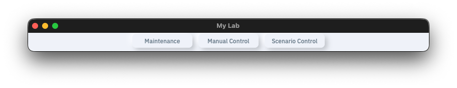
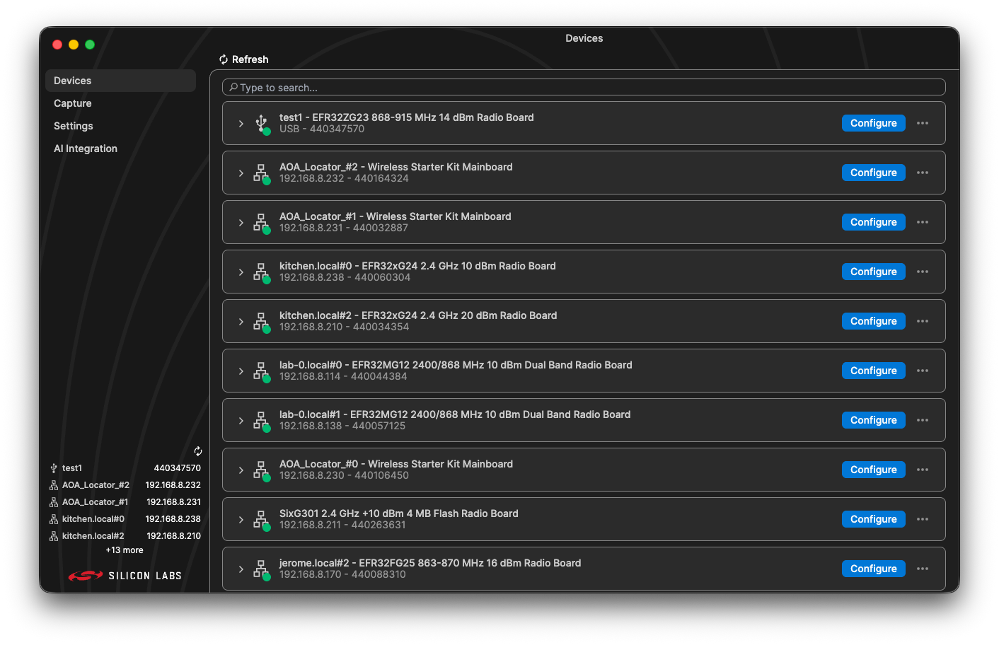
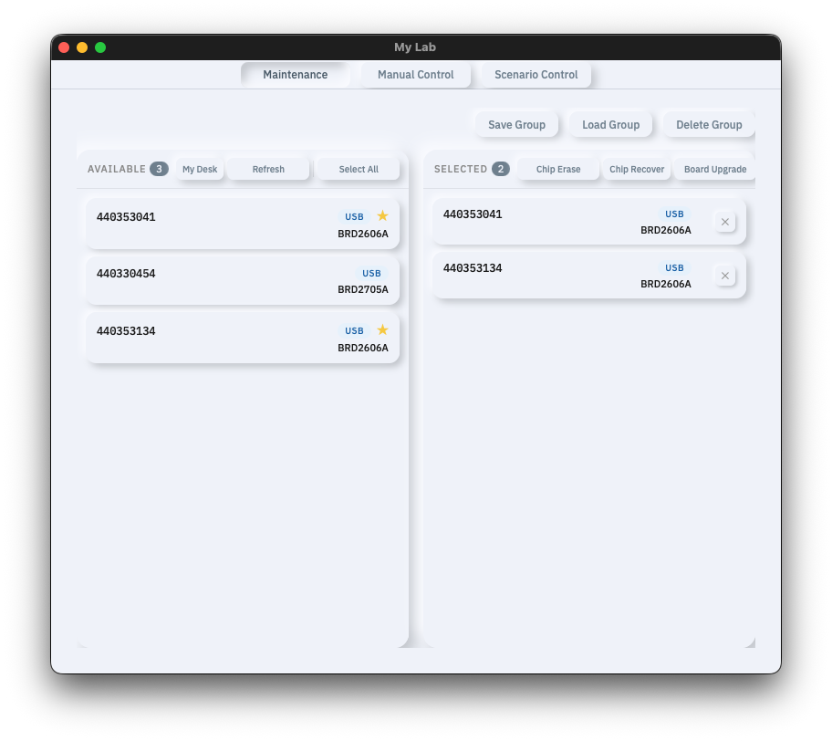
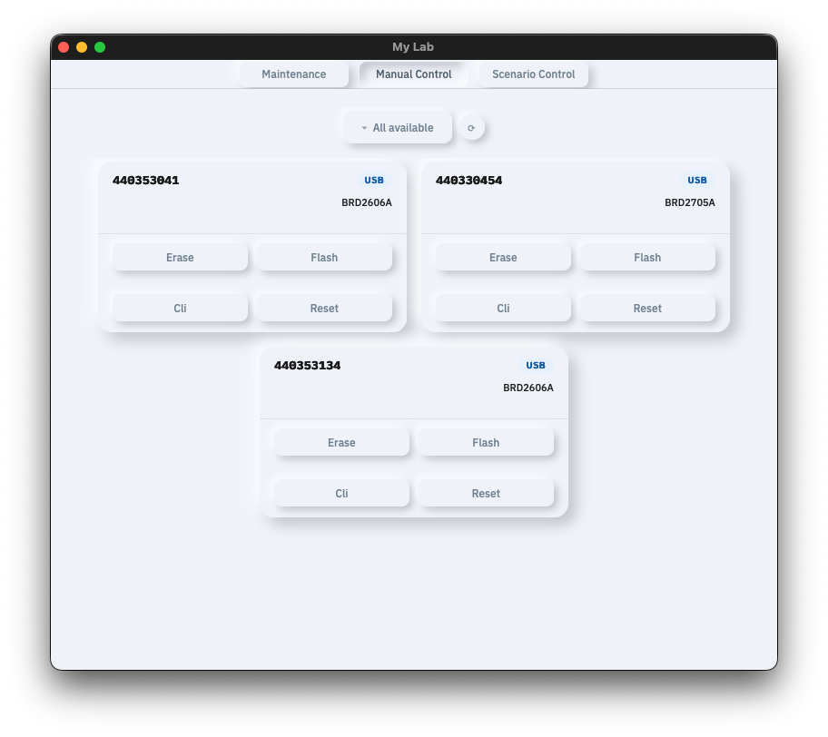
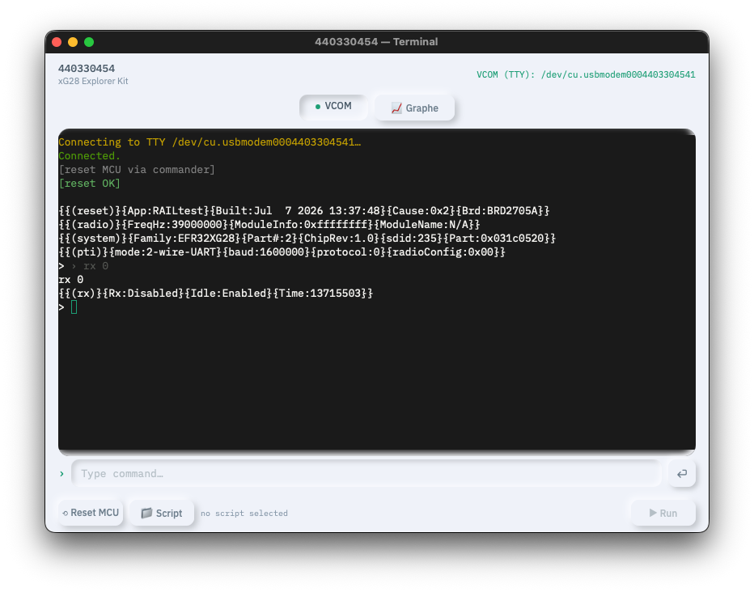
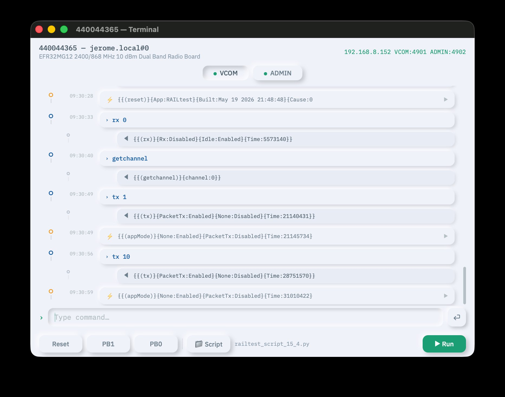
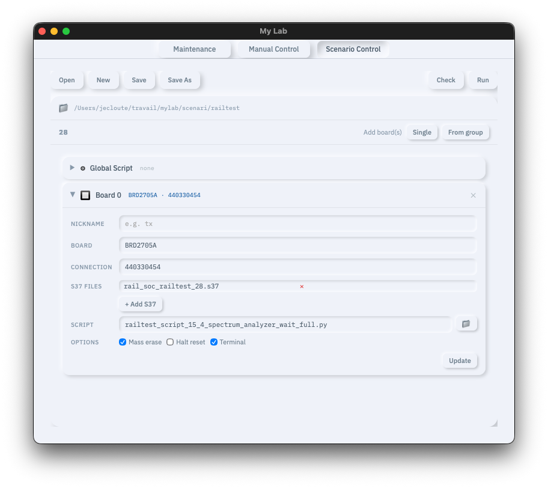
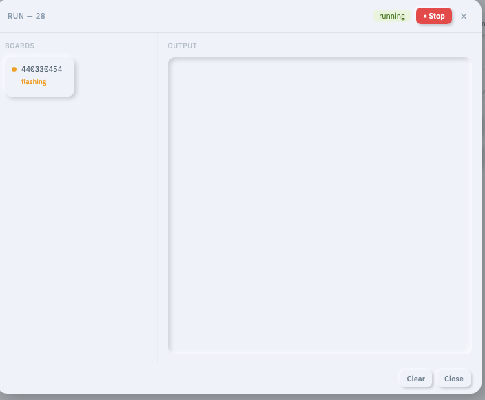
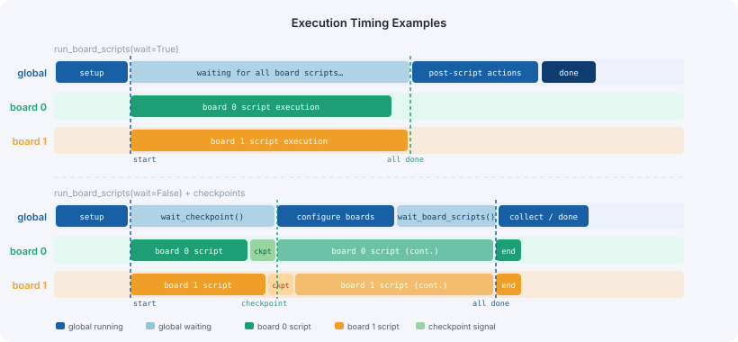
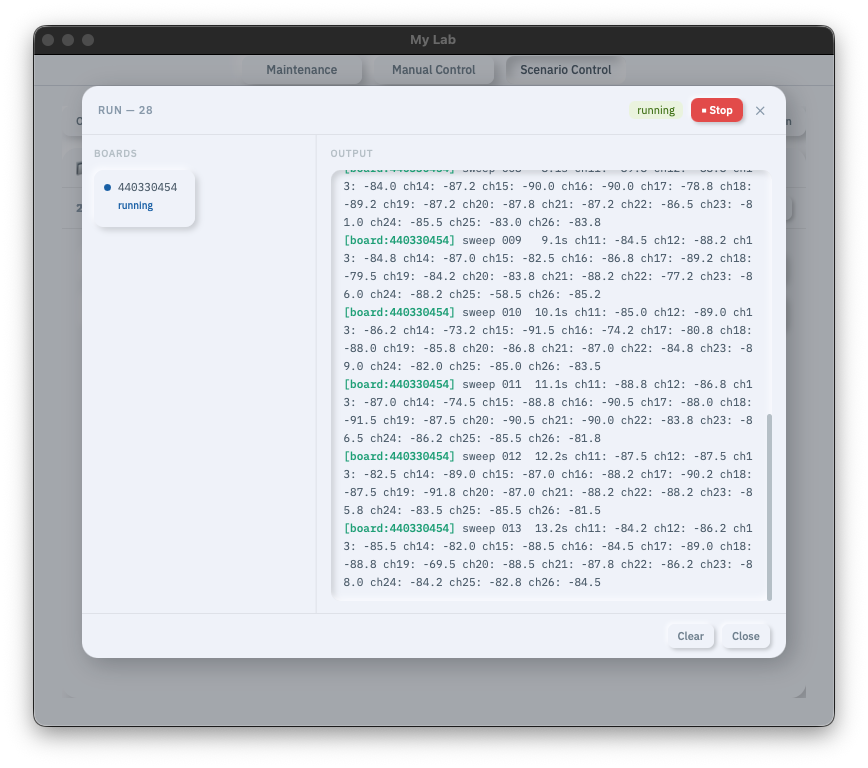

My Lab
Manage your adapter desk, maintain your boards, and automate repetitive actions with Python scripts
1 — Installation
Prerequisites
Ensure the following are available on the host machine before proceeding:
- Python 3.10 or later — verify with
python3 --version - Simplicity Device Manager (SDM) — provided by Silicon Labs SLT or Simplicity Studio
- Simplicity Commander — provided by the Simplicity Commander package
~/.silabs/. Manual paths can be set in config.ini if auto-detection fails.Installation Steps
Step 1 — Unzip the archive:
unzip Archive_clean.zip cd projet
Step 2 — Create a virtual environment (recommended):
# macOS / Linux python3 -m venv .venv source .venv/bin/activate # Windows python3 -m venv .venv .venv\Scripts\activate
Step 3 — Install Python dependencies:
pip install -r requirements.txt
Step 4 — Install the platform-specific pywebview backend:
# macOS pip install pyobjc-framework-WebKit # Windows pip install "pywebview[winforms]"
Configuration
Edit config.ini if auto-detection of SDM or Commander fails:
[paths] sdm = # empty = auto-detect in ~/.silabs commander = # empty = auto-detect in ~/.silabs [server] host = 127.0.0.1 port = 3129 # SDM port — do not change web_port = 8080 # internal Flask port (configurable)
Launch Scripts
Platform-specific scripts handle installation, launch, and cleanup:
| Action | macOS / Linux | Windows |
|---|---|---|
| Install venv + dependencies | ./mylab.sh --install | mylab.bat --install |
| Launch the application | ./mylab.sh | mylab.bat |
| Launch with traces | ./mylab.sh --traces | mylab.bat --traces |
| Clean logs and groups | ./mylab.sh --clean | mylab.bat --clean |
chmod +x mylab.sh once before the first launch. By default all console output is silent — use --traces to enable logging.2 — Application Overview
My Lab is a desktop application (Python · Flask · SocketIO · pywebview) that provides a unified interface for managing Silicon Labs development boards via USB or Ethernet. Four sections are accessible from the top navigation bar.

The application starts as a compact collapsed bar. Clicking any tab expands the window to reveal the corresponding page. SDM is started automatically at launch — stale Silink instances from previous sessions are cleaned up by a stop/start cycle.
SDM
The SDM tab opens the Simplicity Device Manager web interface embedded in the application. It lists all connected adapters with their nickname, board model, serial number, and connection type (USB or Ethernet IP). The Refresh button rescans for newly connected boards.

Maintenance
The Maintenance page handles fleet-level operations. The Available panel lists all adapters detected by SDM. The Selected panel holds boards chosen for action. Move boards by drag-and-drop or via Select All. A My Desk toggle filters to USB-only adapters.

Group Management
- Save Group — save the current selection under a name (stores serial, type, IP, nickname, board ID)
- Load Group — restore a previously saved selection
- Delete Group — permanently remove a saved group
Board Actions
Three buttons in the Selected panel header act on all selected boards simultaneously and in parallel:
| Button | Commander Command | Description |
|---|---|---|
| Chip Erase | device masserase | Full chip mass erase |
| Chip Recover | device recover | Recovers a locked or bricked chip |
| Board Upgrade | adapter fwupgrade | Upgrades the J-Link adapter firmware |
Groups — Uses & Benefits
A group is a saved, named set of adapters. Once created from the Maintenance page's Selected panel, a group can be reused across the application in several ways:
- Maintenance filtering — Load Group restores the exact selection into the Selected panel so you can run Chip Erase, Chip Recover, or Board Upgrade on that set in one click.
- Manual Control filtering — the source selector in Manual Control lists all saved groups; picking one shows only those adapters' cards, keeping your workspace focused.
- Scenario creation — when editing a scenario in Scenario Control, the From group button imports the group's adapters as board entries, pre-filling nickname, board type, and IP address automatically.
Groups are therefore a central organisation tool: create one group per demo setup, one per test bench, or one per team member's desk. This lets you switch context instantly — load a different group and every page reflects the right set of boards without reconfiguring anything manually.
--serialno <serial>, Ethernet boards use --ip <address> automatically.Manual Control
The Manual Control page provides direct hardware control per board. A source selector filters by group or shows all boards. Each card shows serial number, nickname, board model, and connection address.

- Cli — opens a terminal window (VCOM + ADMIN tabs)
- Reset — immediate hardware reset of the board target
- Pb1 / Pb0 — simulates push button press and release
- Only my desk — source filter showing USB-only adapters
The terminal window shows two tabs: VCOM for CLI commands and ADMIN for the J-Link admin interface. Hardware control buttons (Reset, PB0, PB1) are also available at the bottom of the terminal.
Display modes
The terminal supports two display modes, configurable in config.ini under [server]:
terminal_mode = modern # or: classic
Classic mode renders raw serial output in a standard terminal emulator (xterm), identical to a direct serial console.

Modern mode (default) parses the serial stream into a structured timeline. Each command is shown as a collapsible block with its response. Spontaneous events from the board are grouped and displayed separately with a ⚡ icon. Single-line responses are displayed inline without requiring any interaction.

Scenario Control
Scenario Control enables automated multi-board test execution using YAML scenario files paired with Python scripts.

Toolbar
- Load — select an existing scenario; the right panel shows collapsible sections (Global Script + one per board) that can be expanded and edited inline
- Create — start a new scenario with the same structured sections view, pre-populated with one global script entry and one board
- Check — validate the scenario against connected boards; reports errors and warnings
- Run — execute the scenario (enabled after a successful Check)
Run Panel
When a scenario runs, the Run panel appears: left 1/3 shows a status card per board (erasing → flashing → connecting → running → done/error); right 2/3 shows a timestamped log.

3 — Scripting Reference
My Lab scripts are standard Python files executed during a scenario run. The YAML scenario file is the entry point — it declares which boards to flash, which scripts to run, and how everything connects together.
Scenario YAML
YAML files in scenari/ (or subdirectories). The scenario file organises everything: it references the global script, the per-board configuration, firmware files, and individual board scripts. All fields are optional except boards:.
Complete Example
# scenario_rf_test.yaml # Optional global orchestration script script: global_script.py boards: - nickname: "tx" # used with scenario.board("tx") board: "4162A" # board type for USB auto-matching connection: 192.168.0.94 # IP address, "usb", or empty s37_files: - rail_soc_railtest_4162A.s37 script: railtest_script.py masserase: true halt_reset: false open_terminal: true - nickname: "rx" board: "2705A" connection: # empty = auto-detect USB s37_files: - rail_soc_railtest_2705A.s37 script: railtest_script.py masserase: true open_terminal: false
Field Reference
| Field | Type | Description |
|---|---|---|
| script (root) | string | Optional global script filename. Empty or omit to disable. |
| nickname | string | Board ID for scenario.board() calls. Falls back to SDM nickname. |
| board | string | Board type for USB auto-matching (e.g. 4162A). BRD prefix optional. |
| connection | string | IP for Ethernet. Empty or "usb" for auto-detected USB. |
| s37_files | list | .s37 files to flash, relative to the scenario directory. |
| masserase | bool | Full chip erase before flash. Default: true. |
| halt_reset | bool | Hold in reset after flash. Default: false. |
| open_terminal | bool | Auto-open terminal after connect. Default: false. |
Execution Flow
When a scenario runs, My Lab executes these phases in order:
- Flash phase — all boards are erased and flashed in parallel
- Connect phase — all boards are connected (VCOM + ADMIN) in parallel
- Script phase — if a global script exists, it runs and is responsible for launching board scripts; otherwise all board scripts run in parallel directly
Scenario Check
Always run Check before Run. The checker validates:
- Script files exist and have valid Python syntax
- All
.s37firmware files exist in the scenario directory connectionis a valid IP, "usb", or empty- No duplicate nicknames across boards
- Board type matches an available adapter (warning only)
Global Script
Declared at root level of the YAML via script:. Must define a script(scenario) function. The global script is the conductor — it decides when board scripts run, can synchronise between boards at named checkpoints, and can send commands to any board directly.
Timing Diagram
The diagram below shows two execution patterns. The top half shows run_board_scripts(wait=True) — the global script blocks until all board scripts finish. The bottom half shows wait=False with checkpoints, allowing the global script to configure boards mid-execution.

Scenario API
| Method | Description |
|---|---|
| scenario.board(id) | Access board by index (int), serial number, or nickname. Raises ValueError if not found. |
| scenario.boards | List of all Board objects in YAML order |
| scenario.release_reset() | Reset all boards simultaneously in parallel |
| scenario.run_board_scripts(wait=True) | Run per-board scripts in parallel. wait=False returns immediately. |
| scenario.wait_board_scripts() | Block until all per-board scripts finish |
| scenario.wait_checkpoint(name, serials=None, timeout=30) | Block until boards reach checkpoint. serials=[] for subset. |
| scenario.cli_all(cmd) | Same CLI command to all boards in parallel. Returns {nickname: response}. |
| scenario.delay(seconds) | Sleep for given duration |
| scenario.print(msg) | Emit message to Run panel as [global] |
Global Script Template
# global_script.py def script(scenario): # Access boards by nickname, serial, or index tx = scenario.board("tx") # by nickname rx = scenario.board(1) # by index (0-based) scenario.print("=== Test Start ===") # ── Option A: run board scripts and block until all finish ── scenario.run_board_scripts(wait=True) # global resumes here once ALL board scripts are done tx.cli("tx 10") # ── Option B: run async + checkpoint synchronisation ── scenario.run_board_scripts(wait=False) scenario.wait_checkpoint("booted", timeout=15.0) # wait for all boards tx.cli("set_mode tx") # configure while scripts still run rx.cli("set_mode rx") scenario.wait_board_scripts() # ── Collect results ── results = scenario.cli_all("get_stats") for name, resp in results.items(): scenario.print(f"{name}: {resp}") scenario.print("=== Test Complete ===")
Checkpoint Synchronisation
Checkpoints let board scripts signal the global script that a milestone has been reached. The global script blocks at wait_checkpoint() until all (or selected) boards have called board.checkpoint(name).
# In board_script.py: board.reset() board.delay(1.5) board.checkpoint("booted") # signal: this board is ready # board script continues independently after signalling... board.cli("run_test") # In global_script.py: scenario.run_board_scripts(wait=False) scenario.wait_checkpoint("booted") # blocks until ALL boards signal # now configure both boards simultaneously scenario.board("tx").cli("set_mode tx") scenario.board("rx").cli("set_mode rx")
scenario.wait_checkpoint(name, serials=["tx","rx"]) waits only for the listed boards by nickname or serial. The board script continues running after calling checkpoint() — it is not blocked.Board Script
Declared in the YAML via script: under a board entry. Must define a script(board) function receiving the Board object. Board scripts run in parallel across all boards — one thread per board.
Board API
| Method | Description |
|---|---|
| board.config_vcom(line_ending, echo, prompt) | Configure VCOM parameters before use |
| board.config_admin(line_ending, echo, prompt) | Configure Admin parameters before use |
| board.cli(cmd, timeout=10.0) | Send CLI command; returns cleaned response (echo + prompt stripped) |
| board.admin(cmd, timeout=10.0) | Send Admin command; returns response string |
| board.reset() | Hardware reset via Admin; waits 1s for boot |
| board.flash(firmware_path, serial=None, ip=None, masserase=True, halt_reset=False) | Flash a .hex/.s37 firmware file using Simplicity Commander. Connection is auto-detected from board.host (USB if localhost, JLink IP otherwise). Override with serial= for -s or ip= for --ip. Returns True on success. |
| board.button(pb, duration=0.1) | Press push button pb (0 or 1) for given duration |
| board.delay(seconds) | Sleep for given duration |
| board.print(msg) | Emit message to Run panel as [board:nickname] |
| board.checkpoint(name) | Signal named sync point to the global script (non-blocking) |
| board.serial | Serial number string (read-only) |
| board.nickname | Nickname from YAML or SDM (read-only) |
board.flash() examples
board.flash("/path/to/firmware.hex") # auto connection board.flash("/path/to/firmware.hex", serial="440012345") # force -s board.flash("/path/to/firmware.hex", ip="192.168.1.100") # force --ip board.flash("/path/to/firmware.hex", masserase=False) # skip erase board.flash("/path/to/firmware.hex", halt_reset=True) # hold CPU halted
Real-World Example — IEEE 802.15.4 TX Test
import time from random import randint def script(board): board.config_vcom(line_ending="CRLF", echo=True, prompt=">") board.reset() board.delay(1.5) # wait for board to fully boot # --- IEEE 802.15.4 2.4 GHz Init --- board.print("--- init 2.4GHz 802.15.4 ---") board.cli("rx 0") board.cli("config2p4GHz802154") board.cli("enable802154 rx 100 192 1000") board.cli("configTxOptions 1") # --- Set TX Payload (26-byte 802.15.4 frame) --- board.print("--- load payload ---") board.cli("setTxLength 26") board.cli("setTxPayload 0 0x1b 0x61 0x98 0x00 0x34 0x12 0x44 0x33 0x55 0x44") board.cli("setTxPayload 10 0x00 0x01 0x02 0x03 0x04 0x05 0x06 0x07 0x08 0x09") board.cli("setTxPayload 20 0x0a 0x0b 0x0c 0x0d 0x0e 0x0f") # --- Transmit via CLI --- board.print("--- send 1 packet using CLI ---") board.cli("tx 1") # --- Transmit via button press --- board.print("--- send 1 packet using button ---") board.button(0, 0.3)
Working with Responses
Board scripts are standard Python — the full Python standard library is available. Board CLI responses use the format {{key:value}} and can be processed with any Python technique:
import re # ── Using re.search — extract a single value ── resp = board.cli("getchannel") match = re.search(r"channel:(\d+)", resp) channel = int(match.group(1)) if match else None board.print(f"Channel: {channel}") # ── Using re.findall — parse all key:value pairs into a dict ── resp = board.cli("get_stats") pairs = re.findall(r"\{([^{}]+)\}", resp) data = dict(p.split(":", 1) for p in pairs if ":" in p) board.print(f"Transmitted: {data.get('transmitted', '?')}") board.print(f"Failed: {data.get('failed', '?')}") # ── Any Python logic is valid — loops, conditions, assertions ── for channel in [11, 15, 20, 25]: board.cli(f"setchannel {channel}") resp = board.cli("tx 10") board.print(f"ch{channel}: {resp.strip()}") # ── Import standard library modules as needed ── import time, json from random import randint # ── Use assertions to fail the script on unexpected results ── resp = board.cli("getchannel") assert "channel:11" in resp, f"Unexpected channel: {resp}"
board.cli() automatically strips the command echo and trailing prompt. Since scripts are pure Python, you can use any standard library: re, json, time, math, csv, etc. Any unhandled exception marks the board as error in the Run panel.